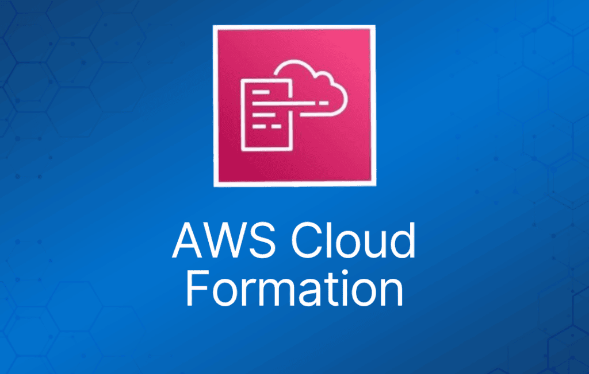

AWS CloudFormation 是一项让你以代码形式（Infrastructure as Code）管理、配置和预置 AWS 基础设施的服务。
AWS CloudFormation 提供了一种通用语言，用于描述和预置云环境中的所有基础设施资源。
资源通过 CloudFormation 模板（template）来定义。
CloudFormation 解析模板，并发起相应的 API 调用来创建你定义的资源。
支持 YAML 或 JSON 格式。
CloudFormation 可用于预置范围广泛的 AWS 资源。
可以把 CloudFormation 理解为以代码方式部署基础设施。
CloudFormation 与 AWS Elastic Beanstalk 有一些相似之处，但两者也有明显区别，详见下表：
| CloudFormation | Elastic Beanstalk |
| “模板驱动的资源预置” | “让 Web 应用部署变简单” |
| 使用代码部署基础设施 | 在 EC2 上部署应用（PaaS） |
| 几乎可部署任何 AWS 服务 | 部署基于 Java、.NET、PHP、Node.js、Python、Ruby、Go 和 Docker 的 Web 应用 |
| 使用 JSON 或 YAML 模板文件 | 使用 ZIP 或 WAR 文件 |
| 类似 Terraform | 类似 Google App Engine |
主要优势
基础设施以一致的方式预置，减少（人为）错误。
相比手动配置资源，节省时间和精力。
CloudFormation 模板可以使用版本控制和同行评审（peer review）。
免费使用（只对预置的资源收费）。
可用于管理更新和依赖关系。
也可以用于回滚和删除整个 stack。
核心概念
下表介绍与 AWS CloudFormation 相关的核心概念：
| 组件 | 说明 |
| Templates（模板） | 包含构建 AWS 环境指令的 JSON 或 YAML 文本文件 |
| Stacks（堆栈） | 由模板描述的整个环境，作为单个单元进行创建、更新和删除 |
| StackSets | AWS CloudFormation StackSets 扩展了 stack 的功能，让你能够通过单次操作跨多个账户和区域创建、更新或删除 stack |
| Change Sets（变更集） | 对 stack 拟做变更的摘要，让你在实施之前看到这些变更可能对现有资源产生的影响 |
| Templates（模板） | 包含构建 AWS 环境指令的 JSON 或 YAML 文本文件 |
模板（Templates）
模板是用于描述你要预置或变更的基础设施最终状态的 YAML 或 JSON 文件。
创建模板后，可以直接上传到 CloudFormation，或通过 Amazon S3 上传。
CloudFormation 读取模板并代替你发起 API 调用。
最终创建出来的资源集合称为一个“Stack”。
逻辑 ID（Logical ID）用于在模板内部引用资源。
物理 ID（Physical ID）用于在 AWS CloudFormation 模板之外标识资源，但只有在资源创建之后才存在。
模板元素
必需项：
- 资源列表及相关的配置值。
非必需项：
- 模板参数（上限 60 个）。
- 输出值（上限 60 个）。
- 数据表列表。
模板组成部分
Resources —— 必需的 Resources 段声明你想包含在 stack 中的 AWS 资源，例如 Amazon EC2 实例或 Amazon S3 bucket。
- 必需。
- 表示将要创建的 AWS 组件。
- 资源声明后可以互相引用。
下面的 YAML 示例将一台 EC2 实例声明为资源：
Resources:
MyEC2Instance:
Type: "AWS::EC2::Instance"
Properties:
ImageId: "ami-0ff8a91507f77f867"
参数（Parameters）
使用可选的 Parameters 段来自定义模板。参数让你在每次创建或更新 stack 时向模板传入自定义值。
- 为 CloudFormation 模板提供输入。
- 有利于模板复用。
下面的示例声明了一个名为 InstanceTypeParameter 的参数。该参数让你在创建或更新 stack 时指定要使用的 Amazon EC2 实例类型。
注意：InstanceTypeParameter 的默认值是 t2.micro。除非提供其他值，否则 AWS CloudFormation 会使用该值来预置 stack。
Parameters:
InstanceTypeParameter:
Type: String
Default: t2.micro
AllowedValues:
- t2.micro
- m1.small
- m1.large
Description: Enter t2.micro, m1.small, or m1.large. Default is t2.micro.
伪参数（Pseudo Parameters）
伪参数是由 AWS CloudFormation 预定义的参数，无需在模板中声明。用法与普通参数相同，可作为 Ref 函数的参数。
例如：
- AWS::AccountId —— 返回正在创建 stack 的 AWS 账户 ID。
- AWS::NotificationARNs —— 返回当前 stack 的通知 Amazon Resource Name（ARN）列表。
- AWS::Region —— 返回表示当前资源所在 AWS 区域的字符串。
- AWS::StackId —— 返回通过 aws cloudformation create-stack 命令指定的 stack ID。
映射（Mappings）
可选的 Mappings 段将键映射到一组对应的命名值。
- 固定变量。
- 适合区分不同区域、环境、AMI 等。
- 需要提前知道这些值。
- 对于用户特定的值，请改用参数（Parameters）。
下面的示例以区域为键，映射到两组值：一组名为 HVM64，另一组名为 HVMG2。
RegionMap: us-east-1: HVM64: ami-0ff8a91507f77f867 HVMG2: ami-0a584ac55a7631c0c us-west-1: HVM64: ami-0bdb828fd58c52235 HVMG2: ami-066ee5fd4a9ef77f1
考试提示：使用映射时，你可以根据区域设置值。例如创建一个以区域名为键的映射，包含你想为每个特定区域指定的值。
输出（Outputs）
可选的 Outputs 段声明输出值，这些值可以被导入到其他 stack（用于创建跨 stack 引用）、在响应中返回（用于描述 stack 调用），或在 AWS CloudFormation 控制台中查看。
- 输出可以被导入到其他 stack。
- 可以在控制台或使用 AWS CLI 查看输出。
- 如果一个 Stack 的输出被另一个 CloudFormation Stack 引用，则无法删除该 Stack。
在下面的 YAML 示例中，名为 StackVPC 的输出返回一个 VPC 的 ID，然后以 stack 名称加上 VPCID 后缀作为名称导出该值，供跨 stack 引用：
Outputs:
StackVPC:
Description: The ID of the VPC
Value: !Ref MyVPC
Export:
Name: !Sub "${AWS::StackName}-VPCID"
条件（Conditions）
可选的 Conditions 段包含一些语句，用于定义在什么情况下创建或配置实体。
- 根据条件控制资源的创建。
- 可应用于资源和输出。
在下面的 YAML 示例中，只有当 EnvType 参数等于 prod 时才会创建资源：
Conditions: CreateProdResources: !Equals [ !Ref EnvType, prod ]
转换（Transform）
可选的 Transform 段指定一个或多个宏（macro），AWS CloudFormation 用它们来处理你的模板。
Transform 段可用于引用存储在 S3 中的额外代码，例如 Lambda 代码或可复用的 CloudFormation 代码片段。
AWS::Serverless 转换是由 AWS CloudFormation 托管的宏，它接收用 AWS Serverless Application Model（AWS SAM）语法编写的整个模板，并将其转换、展开为合规的 AWS CloudFormation 模板。
在下面的示例中，模板使用 AWS SAM 语法简化了 Lambda 函数及其执行角色的声明：
Transform: AWS::Serverless-2016-10-31 Resources: MyServerlessFunctionLogicalID: Type: AWS::Serverless::Function Properties: Handler: index.handler Runtime: nodejs8.10 CodeUri: 's3://testBucket/mySourceCode.zip'
内置函数（Intrinsic Functions）
AWS CloudFormation 提供了若干内置函数，帮助你管理 stack。在模板中使用内置函数，可以为那些直到运行时才可知的属性赋值。
考试提示：至少要掌握下面列出的内置函数。完整列表见：https://docs.aws.amazon.com/AWSCloudFormation/latest/UserGuide/intrinsic-function-reference.html
Ref
- Fn::Ref（YAML 中写作 !Ref）。
- 内置函数 Ref 返回指定参数或资源的值。
- 指定参数的逻辑名时，返回该参数的值。
- 指定资源的逻辑名时，返回通常可用于引用该资源的值，例如物理 ID。
下面对 Elastic IP 地址的资源声明需要一个 EC2 实例的实例 ID，并使用 Ref 函数来指定 MyEC2Instance 资源的实例 ID：
MyEIP: Type: "AWS::EC2::EIP" Properties: InstanceId: !Ref MyEC2Instance
Fn::GetAtt
- Fn::GetAtt 内置函数返回模板中某个资源的属性值。
- 完整语法（YAML）：Fn::GetAtt: [ logicalNameOfResource, attributeName ]
- 简写形式（YAML）：!GetAtt logicalNameOfResource.attributeName
下面的示例模板返回逻辑名为 myELB 的负载均衡器的 SourceSecurityGroup.OwnerAlias 和 SourceSecurityGroup.GroupName。
AWSTemplateFormatVersion: 2010-09-09 Resources: myELB: Type: AWS::ElasticLoadBalancing::LoadBalancer Properties: AvailabilityZones: - eu-west-1a Listeners: - LoadBalancerPort: '80' InstancePort: '80' Protocol: HTTP myELBIngressGroup: Type: AWS::EC2::SecurityGroup Properties: GroupDescription: ELB ingress group SecurityGroupIngress: - IpProtocol: tcp FromPort: '80' ToPort: '80' SourceSecurityGroupOwnerId: !GetAtt myELB.SourceSecurityGroup.OwnerAlias SourceSecurityGroupName: !GetAtt myELB.SourceSecurityGroup.GroupName
Fn::FindInMap
- 内置函数 Fn::FindInMap 返回在 Mappings 段中声明的两级映射中对应键的值。
- 完整语法（YAML）：Fn::FindInMap: [ MapName, TopLevelKey, SecondLevelKey ]
- 简写形式（YAML）：!FindInMap [ MapName, TopLevelKey, SecondLevelKey ]
下面的示例展示了如何在一个模板中使用 Fn::FindInMap：该模板的 Mappings 段包含一个名为 RegionMap 的映射，将 AMI 与 AWS 区域关联起来：
Mappings: RegionMap: us-east-1: HVM64: "ami-0ff8a91507f77f867" HVMG2: "ami-0a584ac55a7631c0c" us-west-1: HVM64: "ami-0bdb828fd58c52235" HVMG2: "ami-066ee5fd4a9ef77f1" Resources: myEC2Instance: Type: "AWS::EC2::Instance" Properties: ImageId: !FindInMap - RegionMap - !Ref 'AWS::Region' - HVM64 InstanceType: m1.small
Fn::ImportValue
- 内置函数 Fn::ImportValue 返回由另一个 stack 导出的输出值。
- 通常用该函数创建跨 stack 引用。
Fn::ImportValue: !Sub "$-SecurityGroupID"
Fn::Join
- 完整语法（YAML）：Fn::Join: [ delimiter, [ comma-delimited list of values ] ]
- 简写形式（YAML）：!Join [ delimiter, [ comma-delimited list of values ] ]
下面的示例使用 Fn::Join 构造一个字符串值，其中用 Ref 函数引用了 Partition 参数和 AWS::AccountId 伪参数。
!Join - '' - - 'arn:' - !Ref Partition - ':s3:::elasticbeanstalk-*-' - !Ref 'AWS::AccountId'
Fn::Sub
- 内置函数 Fn::Sub 将输入字符串中的变量替换为你指定的值。
- 在模板中，可以用该函数构造命令或输出，其中包含直到创建或更新 stack 时才可知的值。
下面的示例使用映射，将 $ 变量替换为 Ref 函数返回的值：
Name: !Sub
- www.$
- { Domain: !Ref RootDomainName }
Stack 与 Stack Set
Stack
基于模板部署的资源集合。
使用模板创建、更新和删除 stack。
可通过 Management Console、CLI 或 API 部署。
Stack 创建出错时：
- 出错自动回滚默认开启。
- 即使出错，已预置的资源仍会收费。
更新 stack：
- AWS CloudFormation 提供两种更新 stack 的方式：直接更新（direct update），或创建并执行变更集（change set）。
- 直接更新 stack 时，你提交变更，AWS CloudFormation 会立即部署。
- 想快速部署更新时使用直接更新。
- 使用变更集时，你可以预览 AWS CloudFormation 将对 stack 做的变更，然后再决定是否应用。
Stack Set
AWS CloudFormation StackSets 扩展了 stack 的功能，让你能够通过单次操作跨多个账户和区域创建、更新或删除 stack。
使用管理员账户定义和管理一个 AWS CloudFormation 模板，并以该模板为基础，在指定区域的选定目标账户中预置 stack。
管理员账户（administrator account）是你创建 stack set 的 AWS 账户。
stack set 通过登录创建它的 AWS 管理员账户来管理。
目标账户（target account）是你在其中创建、更新或删除 stack set 中一个或多个 stack 的账户。
在使用 stack set 向目标账户创建 stack 之前，必须在管理员账户和目标账户之间建立信任关系（trust relationship）。
嵌套 Stack（Nested Stacks）
嵌套 stack 允许对常见场景的 CloudFormation 代码进行复用。
例如负载均衡器、Web 服务器、应用服务器等的标准配置。
不必每次复制代码，而是为每个常见场景创建一个标准模板，然后在你的 CloudFormation 模板中引用它。
最佳实践
AWS 提供了 Python“辅助脚本（helper scripts）”，可帮助你在 EC2 实例上安装软件和启动服务。
- 通过 CloudFormation 对环境做变更，而不是直接操作资源。
- 使用变更集（Change Set）识别更新中的潜在问题点。
- 使用 Stack Policy 明确保护 stack 中的敏感部分。
- 使用 CodeCommit 或 GitHub 等版本控制系统跟踪模板变更。
Serverless Application Model（SAM）
使用 SAM 通过 CloudFormation 部署无服务器（serverless）应用。
SAM 是 CloudFormation 的扩展，用于定义无服务器应用。
用简化的语法定义无服务器资源：API、Lambda 函数、DynamoDB 表等。
使用 SAM CLI 打包部署代码、上传到 S3 并部署你的无服务器应用。
EC2 的 User Data
User data 可以包含在 CloudFormation 中。
脚本通过 Fn::Base64 传入。
user data 脚本日志存储在 /var/log/cloud-init-output.log。
在 Amazon EC2 上，二进制文件位于 /opt/aws/bin/cfn-init。
CloudFormation 辅助脚本
cfn-init：
- cfn-init 辅助脚本读取 AWS::CloudFormation::Init 键中的模板元数据，并据此执行以下操作：
- 从 AWS CloudFormation 获取并解析元数据
- 安装软件包
- 向磁盘写入文件
- 启用/禁用、启动/停止服务
- cfn-init 不需要凭证，因此无需使用 –access-key、–secret-key、–role 或 –credential-file 选项。
- 日志输出到 /var/log/cfn-init.log
cfn-signal：
- cfn-signal 辅助脚本向 AWS CloudFormation 发送信号，表明 Amazon EC2 实例是否已成功创建或更新。
- 如果你在实例上安装并配置了软件，可以在软件就绪时向 AWS CloudFormation 发送信号。
- cfn-signal 脚本通常与 CreationPolicy 或带有 WaitOnResourceSignals 更新策略的 Auto Scaling 组配合使用。
- 当 AWS CloudFormation 使用这些策略创建或更新资源时，会暂停 stack 的工作，直到资源收到所需数量的信号或超过超时时间。
- 你可以向创建策略（CreationPolicy）或等待条件句柄（WaitOnResourceSignals）发送信号。
错误排查：
- 确保 AMI 中包含 CloudFormation 辅助脚本。
- 检查 cfn-init 和 cfn-signal 命令是否已成功运行。
- 验证互联网连通性。
创建策略与等待条件（Creation Policies and Wait Conditions）
- CreationPolicy 属性：
- 当你希望在 stack 创建继续之前等待资源配置操作完成时，使用 CreationPolicy 属性。
- 可以将 CreationPolicy 属性与资源关联，防止其状态在 AWS CloudFormation 收到指定数量的成功信号或超时之前变为 create complete。
- 要向资源发送信号，可以使用 cfn-signal 辅助脚本或 SignalResource API。
- AWS CloudFormation 会将有效信号发布到 stack 事件中，方便你跟踪已发送的信号数量。
以下 CloudFormation 资源支持创建策略：
DeletionPolicy 属性：
- 使用 DeletionPolicy 属性，可以在 stack 被删除时保留资源或（在某些情况下）备份资源。
- 为每个你想控制的资源指定 DeletionPolicy 属性。
- 如果资源没有 DeletionPolicy 属性，AWS CloudFormation 默认会删除该资源。
DependsOn 属性：
- 使用 DependsOn 属性，可以指定某个资源必须在另一个资源之后创建。
- 给资源添加 DependsOn 属性后，该资源只有在 DependsOn 指定的资源创建完成后才会被创建。
WaitCondition：
- 注意：对于 Amazon EC2 和 Auto Scaling 资源，AWS 建议使用 CreationPolicy 属性而不是等待条件。
- 等待条件适用于以下场景：
- 将 stack 资源创建与 stack 创建之外的配置操作进行协调。
- 跟踪配置过程的状态。
UpdatePolicy 属性（WaitOnResourceSignals）
使用 UpdatePolicy 属性指定 AWS CloudFormation 如何处理以下资源的更新：
- AWS::AutoScaling::AutoScalingGroup，
- AWS::ElastiCache::ReplicationGroup
- AWS::Elasticsearch::Domain
- AWS::Lambda::Alias
UpdateReplacePolicy 属性：
- 使用 UpdateReplacePolicy 属性，可以在 stack 更新操作期间资源被替换时，保留或（在某些情况下）备份资源的现有物理实例。
回滚与创建失败
- 默认情况下所有内容都会被删除。
- 可以选择禁用回滚（便于排查失败原因）。
Stack 更新失败：
- stack 会自动回滚到上一个已知的正常状态。
- 日志可以帮助你理解发生了什么问题。
监控与报告
你可以通过查看 stack 事件来监控 stack 更新的进度。控制台的 Events 标签页按事件时间排序显示 stack 创建和更新过程中的每个主要步骤，最新的事件排在最上面。
对于由 CloudFormation 创建的资源，使用适用于对应服务的 AWS 监控和报告工具。
授权与访问控制
你可以将 IAM 与 AWS CloudFormation 结合使用，控制用户对 AWS CloudFormation 可以执行的操作，例如是否可以查看 stack 模板、创建 stack 或删除 stack。
除了 AWS CloudFormation 的操作外，你还可以管理每个用户可以使用哪些 AWS 服务和资源。
这样，你就可以控制用户在使用 AWS CloudFormation 时能访问哪些资源。
例如，你可以指定哪些用户可以创建 Amazon EC2 实例、终止数据库实例或更新 VPC。当他们通过 AWS CloudFormation 执行这些操作时，会应用相同的权限。
计费
AWS CloudFormation 本身不额外收费。
通过 AWS CloudFormation 创建的 AWS 资源（如 Amazon EC2 实例、Elastic Load Balancing 负载均衡器等）按你手动创建时相同的方式计费。
你只需按实际用量付费；没有最低费用，也不需要预付款承诺。
代码片段
https://docs.aws.amazon.com/AWSCloudFormation/latest/UserGuide/CHAP_TemplateQuickRef.html